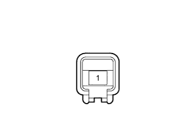

LIGHTING SYSTEM > Back Door Courtesy Switch Circuit |
| 1.READ VALUE USING INTELLIGENT TESTER (DOOR COURTESY LIGHT SWITCH) |
Using the intelligent tester, read the Data List (Click here).
| Tester Display | Measurement Item/Range | Normal Condition | Diagnostic Note |
| Back Door Courtesy SW | Back door courtesy switch signal / ON or OFF | ON: Back door open OFF: Back door closed | - |
| Glass Hatch Courtesy Switch | Glass hatch courtesy switch signal / ON or OFF | ON: Glass hatch open OFF: Glass hatch closed | - |
| Result | Proceed to |
| OK | A |
| NG (Back door courtesy light switch does not operate) | B |
| NG (Glass hatch courtesy light switch does not operate) | C |
|
| ||||
|
| ||||
| A | ||
| ||
| 2.INSPECT BACK DOOR COURTESY LIGHT SWITCH ASSEMBLY |
|  |
Remove the back door courtesy light switch (Click here).
Measure the resistance according to the value(s) in the table below.
| Tester Connection | Switch Condition | Specified Condition |
| 1 - Switch body | Pin not pushed | Below 1 Ω |
| Pin pushed | 10 kΩ or higher |
|
| ||||
| OK | |
| 3.CHECK HARNESS AND CONNECTOR (MAIN BODY ECU - BACK DOOR COURTESY LIGHT SWITCH ASSEMBLY) |
Disconnect the G47 main body ECU connector.
Disconnect the R11 back door courtesy light switch connector.
Measure the resistance according to the value(s) in the table below.
| Tester Connection | Condition | Specified Condition |
| G47-19 (BCTY) - R11-1 | Always | Below 1 Ω |
| G47-19 (BCTY) - Body ground | Always | 10 kΩ or higher |
|
| ||||
| OK | ||
| ||
| 4.INSPECT BACK WINDOW LOCK ASSEMBLY (GLASS HATCH COURTESY LIGHT SWITCH) |
Remove the back window lock (Click here).
 | Open | - | - |
Measure the resistance according to the value(s) in the table below.
| Tester Connection | Condition | Specified Condition |
| 1 (-) - 2 (+) | Open | Below 1 Ω |
| Closed | 10 kΩ or higher |
|
| ||||
| OK | |
| 5.CHECK HARNESS AND CONNECTOR (MAIN BODY ECU - BACK WINDOW LOCK ASSEMBLY AND BODY GROUND) |
Disconnect the G47 main body ECU connector.
Disconnect the X4 back window lock connector.
Measure the resistance according to the value(s) in the table below.
| Tester Connection | Condition | Specified Condition |
| G47-1 (GCTY) - X4-2 (+) | Always | Below 1 Ω |
| G47-1 (GCTY) - Body ground | Always | 10 kΩ or higher |
| X4-1 (-) - Body ground | Always | Below 1 Ω |
|
| ||||
| OK | ||
| ||